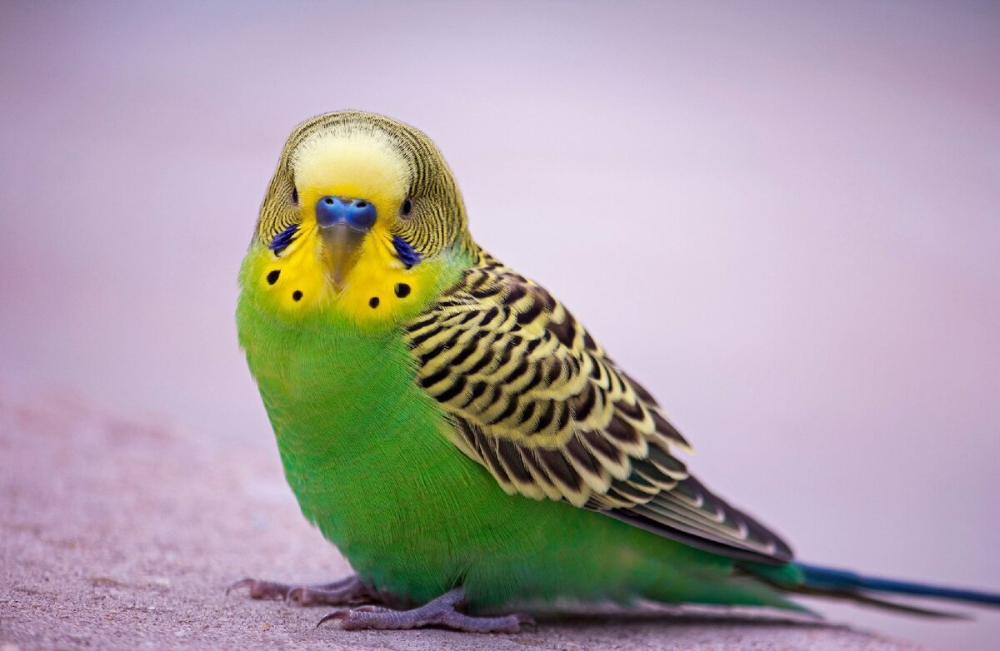
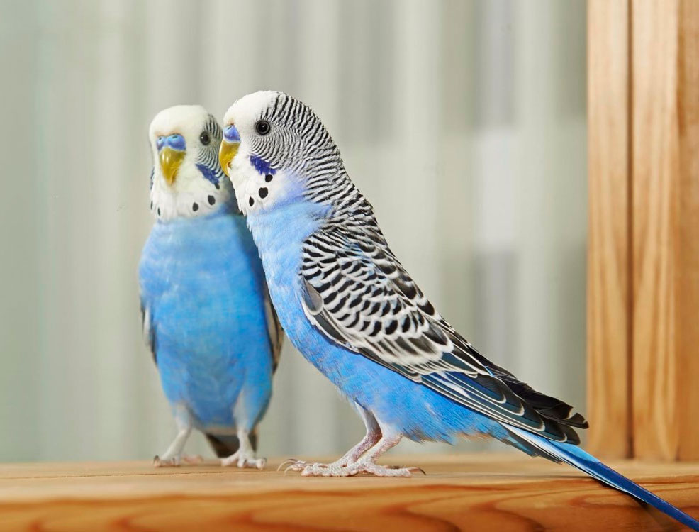
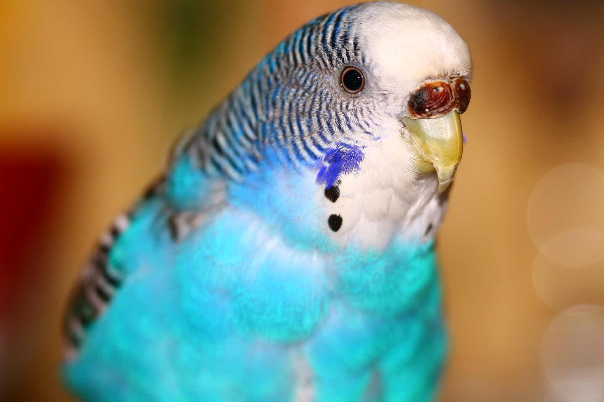
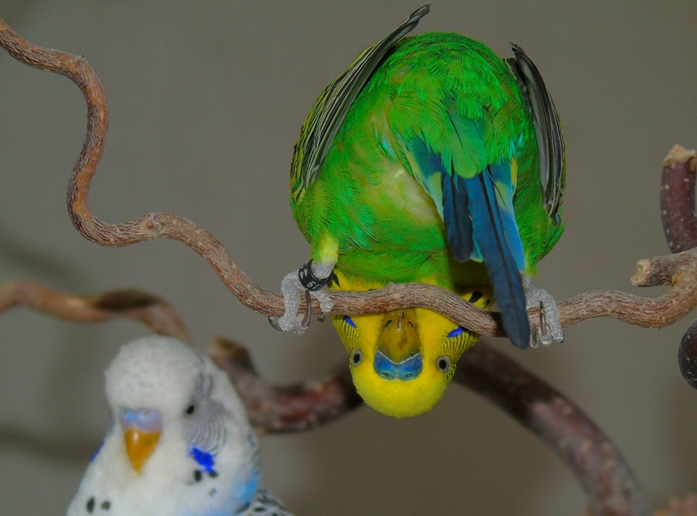
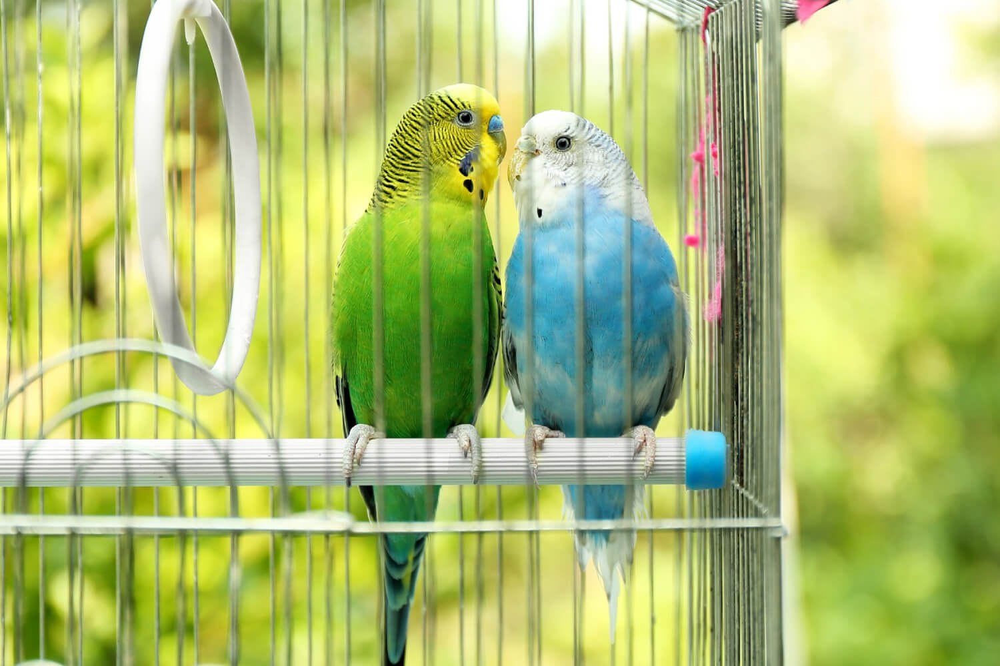
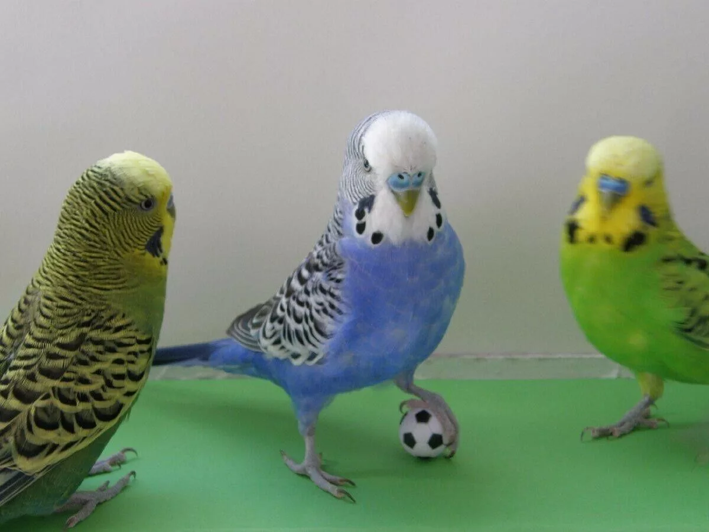
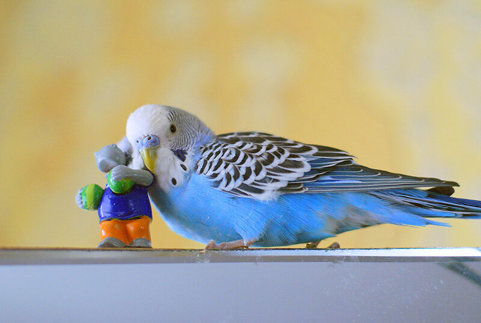
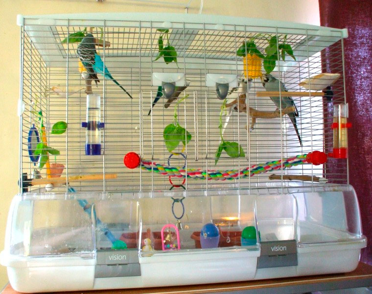

<!DOCTYPE html>
<html lang="en">
<head>
    <meta charset="UTF-8">
    <meta name="viewport" content="width=device-width, initial-scale=1.0">
    <title>Главная страница</title>
</head>
<body>
    
</body>
</html><!doctype html>
<html>
<head>
<meta charset="utf-8">
<title>Волнистый попугай – говорливый тенор. Описание и фото волнистых попугайчиков</title>
<link rel="stylesheet" type="text/css" href="style.css"/>
</head>

<body>
	<nav>
        <ul>
          <li><button onmouseover="this.style.backgroundColor='#C0C0C0';" onmouseout="this.style.backgroundColor='#f2f2f2'"  onclick="location.href='index.html'" type="button">
            Главная</button></li>
          <li><button onmouseover="this.style.backgroundColor='#C0C0C0';" onmouseout="this.style.backgroundColor='#f2f2f2'"  onclick="location.href='zabota.html'" type="button">
            Забота о животных</button></li>
          <li><button onmouseover="this.style.backgroundColor='#C0C0C0';" onmouseout="this.style.backgroundColor='#f2f2f2'"  onclick="location.href='covet.html'" type="button">
            Советы по уходу</button></li>
          <li><button onmouseover="this.style.backgroundColor='#C0C0C0';" onmouseout="this.style.backgroundColor='#f2f2f2'"  onclick="location.href='fact.html'" type="button">
            Интересные факты о животных</button></li>
          
        </ul>
      </nav>
      <div id="up_scroll" style="display: block;">
        <a href="#"><span></span>Вверх</a>
      </div>
	  <div id="wrapper">
		<div id="content"> 

<h1>Волнистый попугай. Описание и фото волнистого попугая</h1>
<p>Волнистый попугай – это птица, которая является популярнейшим домашним питомцем. Этих птиц полюбили за яркость и разнообразие окрасов, способность говорить и неприхотливость. Если Вы решили обзавестись таким пернатым другом, как волнистый попугайчик, будьте готовы, что они отличаются шумом и болтливостью. В этой статье Вы найдете много нового и интересного о волнистых попугайчиках.</p>
<a href="VonPop1.png"  data-lightbox="roadtrip">

</a>
<ul id="toc"></ul>
<h2>Описание породы волнистого попугая.</h2>
<div id="blockCon_1"></div>
<p>У волнистого попугая ступенчатый хвост, длина которого составляет порядка 10 сантиметров. Благодаря длинному хвосту визуально увеличивается и величина самого попугая, хотя длина корпуса не превышает 23 см. Вес взрослой особи составляет не больше 50 граммов. На каждой лапке попугая (а их две) расположено по 4 пальца серовато-синего или розового оттенка. При этом два пальца смотрят вперед, а два назад. Такое расположение пальцев позволяет птице прекрасно себя чувствовать, как на ветках деревьев, так и на горизонтальной поверхности. </p>
<a href="VonPop2.png"  data-lightbox="roadtrip">

</a>
<p>Клюв у птицы изогнутый и крепкий, у основания его расположена восковица с ноздрями и покрытый роговым слоем. Такое же тонкое покрытие находится и на кончике языка попугая. На задней части головы, по направлению к затылку и дальше по спине, на желтом фоне можно увидеть темные линии, в виде волн, толщина которых увеличивается по направлению к спине. У молодых особей этот рисунок несколько размыт.</p>
<a href="VonPop3.png"  data-lightbox="roadtrip">

</a>
<p>Клюв у попугая функционирует не так, как у других птиц, а отличается большей подвижностью. Все дело в том, что более длинная верхняя его часть соединена с черепом с помощью сухожилия. У птенцов клюв темный или бледно-желтый, с зеленоватым оттенком – у взрослых особей.</p>
<a href="VonPop4.png"  data-lightbox="roadtrip">

</a>
<h2>Историческая справка</h2>
<div id="blockCon_2"></div>
<p>В Европу впервые ввезены Д.Гульдом в 1840 году. С этого времени волнистый попугайчик появляется в Англии, Франции, Бельгии и Германии. В последующие годы начался массовый вывоз этих птиц из Австралии. Попугайчиков сотнями и тысячами отлавливали большими сетями. Клетки с птицами переправляли на корабли, отходящие в Европу. При перевозке огромное количество птиц из-за плохого кормления и тесноты погибало. Через десять лет после появления первых партий волнистых попугайчиков в газетах появились сообщения об их успешном разведении в неволе. Крупные торговые фирмы Голландии, Бельгии и Франции полностью удовлетворяли спрос на волнистых попугайчиков. К 1860 году большинство зоопарков Европы уже имело свои популяции волнистых попугайчиков.</p>
<a href="VonPop5.png"  data-lightbox="roadtrip">

</a>
<h2>Характер волнистого попугая. </h2>
<div id="blockCon_3"></div>
<p>У волнистого попугая характер весёлый, дружелюбный и общительный. Лучше этих птичек содержать в паре, тогда им будет не скучно. Заливистое чириканье этих красавцев будет создавать уютную атмосферу в доме. «Волнистик» словно маленькая собачка в пёрышках будет искренне радоваться вашему приходу домой, а любая возможность пообщаться с вами будет воспринята им с восторгом.</p>
<a href="VonPop6.png"  data-lightbox="roadtrip">

</a>
<p>Волнистые попугайчики — очень коммуникабельные товарищи. Купил и забыл — это не про них. С волнистыми попугаями нужно часто проводить время, общаться и играть. Только тогда пернатый питомец будет счастливым и здоровым.</p>
<a href="VonPop7.png"  data-lightbox="roadtrip">

</a>

<h2>Содержание и уход за волнистыми попугаями.</h2>

<p>Клетку для пернатых следует установить на возвышенности (где-то на уровне глаз человека) в месте, где достаточно солнечного света. В таких условиях попугаи будут чувствовать себя весьма комфортно. Очень важно, чтобы для птиц был организован длинный световой день, продолжительностью не меньше 14 часов летом и не меньше 12 часов зимой. С приходом осени следует начать включать дополнительное освещение. Никогда не следует устанавливать клетку с попугаями на подоконник, поскольку они могут простудиться.</p>
<a href="VonPop8.png"  data-lightbox="roadtrip">

</a>
<p>На ночь желательно накрыть клетку тканью. Доступ в воде должен быть свободным, хотя попугаи пьют не так часто. Воду кипятить не нужно, а вот пропустить через фильтр ее нужно, добавив иногда пару капель лимонного сока. Лучше не пользоваться водой из-под крана, а покупать чистую бутилированную. Жердочки должны быть только деревянными, иначе когти попугаев не будут стачиваться естественным образом. Каждый день необходимо проводить профилактическую уборку в клетке, а раз в месяц – генеральную. Для профилактики можно воспользоваться отваром ромашки или полыни.</p>

</a>
 
<div id="sb_left">
<ul class="menu_left">
	
</ul>
<ul class="menu_left">
	
</ul>

</div>
<div id="sb_right">
</div>
</div>

<div class="both_2"></div>
<div id="footer">
	
    <div id="copyr">
      
      «PatsWorld» — сайт про животных с описанием, картинками и другими интересностями. 
    </div>
    <div id="up_scroll">
    	<a href="#"><span></span>Вверх</a>
    </div>
   
        <span id="openstat1"></span>
    
    </div>
</div>
</body>
</html>